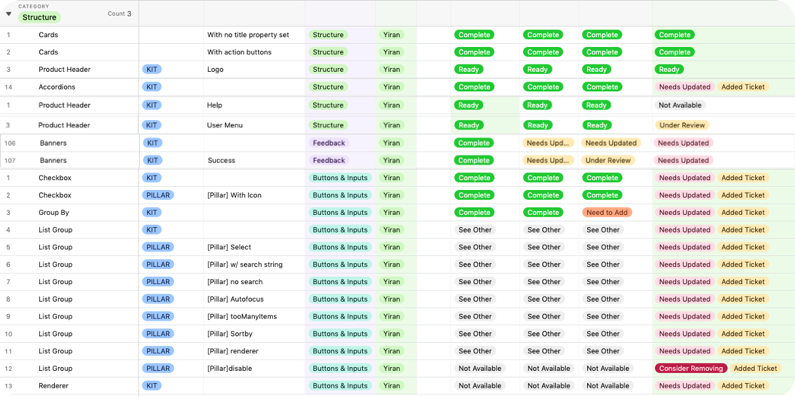
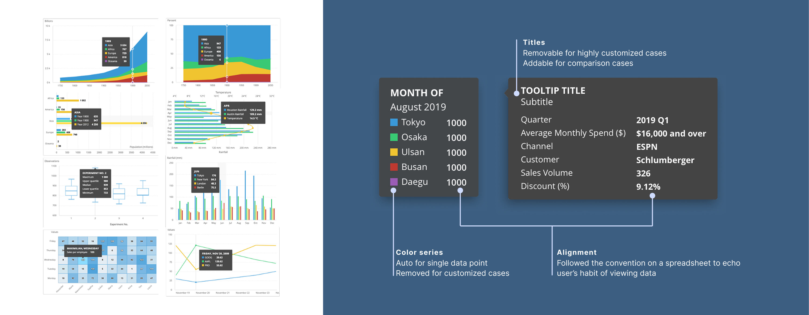

Design System at Scale: Governed 54 Components to Unify Enterprise UX and Eliminate 60% of UI Fix Tickets at PROS
[01 Background]
About PROS
PROS built enterprise pricing optimization software for airlines and retail companies — complex, data-heavy products where pricing analysts needed to execute strategies, analyze performance, and discover revenue opportunities.
My Role
Early in my career, as a UI designer, my role was to govern the "source of truth" across 54 components to ensure the organization could scale without accruing design and engineering debt. This was a critical part of PROS's migration strategy to a cloud-based system.
[02 Design System]
Challenge
Discrepancies between Sketch files, documentation, and the code library were generating many UI fix tickets and slowing down sprint velocity across product teams.
Solution
I led a gap analysis of 132 component variants, identifying misalignments that caused friction during handoffs. I then drove an alignment process to move 20+ core components into full parity across design and production.

Impact
Eliminated an average 60% of UI fix tickets per sprint — freeing engineering capacity for new feature development and unblocking teams from time-consuming rework cycles.
[03 High Density Data Visualization]
Challenge
Standardizing complex data visualization tools for pricing analysis without sacrificing technical feasibility — ensuring consistent behavior across 19 different chart types used across 4 product lines.
Solution
I acted as the bridge between user-centered standards and architectural constraints, standardizing a universal tooltip pattern across all 19 chart types and 4 product lines.

Impact
Enabled developers to stop building one-off customizations, directly increasing implementation speed and delivering consistent data visualization behavior across the entire product suite.
[04 Governance & System Integrity]
Consultative Design
When teams requested custom components, I functioned as a "system consultant" — evaluating the frequency of the need and proposing existing patterns to prevent library fragmentation.
Inclusive Design
I ensured 100% of my components met WCAG AA standards, recognizing that accessibility is a non-negotiable requirement for enterprise-grade SaaS products.